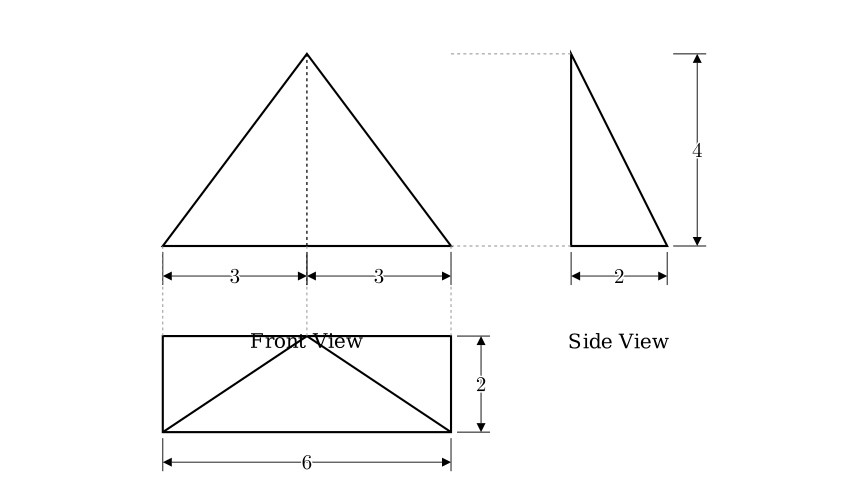
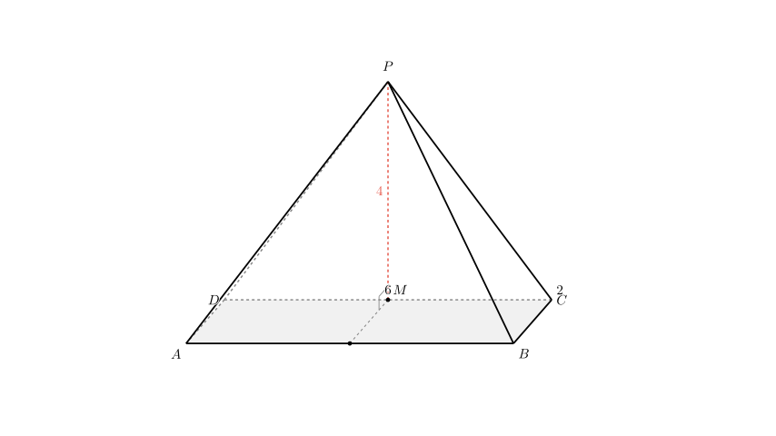
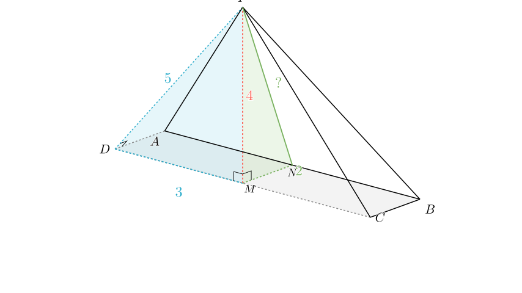

Problem Statement: (2012 Jiaozuo Simulation) As shown in the figure, this is the three-view diagram of a quadrangular pyramid. The surface area of this geometric solid is ______.
Solution Approach: 1. Analyze the Three-View Diagram: We will interpret the Front, Side, and Top views to determine the 3D structure and dimensions of the pyramid. 2. Reconstruct the Geometry: We will identify the shape of the base, the position of the apex, and the height of the pyramid. 3. Calculate Surface Areas: We will calculate the area of the base and each of the four triangular lateral faces individually. 4. Summation: We will add these areas together to find the total surface area.

Step 1: Decoding the Geometry
From the three views, we can determine the specific properties of the quadrangular pyramid:
Geometric Reconstruction: Let the base be rectangle $ABCD$ with $AB = CD = 6$ and $BC = DA = 2$. Let the apex be $P$. Let $M$ be the midpoint of the edge $CD$. The apex $P$ is located directly above point $M$. The height of the pyramid is $PM = 4$.

Step 2: Analyzing the Faces
The surface area consists of 5 parts: the rectangular base and 4 triangular faces.
1. The Base ($ABCD$): This is a rectangle of size $6 \times 2$. $$ \text{Area}_{\text{base}} = 6 \times 2 = 12 $$
2. The Back Face ($PCD$): Since $P$ is directly above $M$ (the midpoint of $CD$), the line $PM$ is perpendicular to $CD$. Triangle $PCD$ is perpendicular to the base. Base $CD = 6$. Height $PM = 4$. $$ \text{Area}_{PCD} = \frac{1}{2} \times \text{base} \times \text{height} = \frac{1}{2} \times 6 \times 4 = 12 $$
3. The Side Faces ($PAD$ and $PBC$): Let's analyze triangle $PAD$. Since $PM \perp \text{Plane } ABCD$, $PM$ is perpendicular to $AD$. Also, $ABCD$ is a rectangle, so $CD \perp AD$. Because $M$ lies on $CD$, the line $MD$ is perpendicular to $AD$. By the geometric properties (or the Three Perpendiculars Theorem), since $PM \perp AD$ (via projection) and $MD \perp AD$, the slant edge $PD$ is perpendicular to $AD$. Thus, $\triangle PAD$ is a right-angled triangle at $D$.
We need the length of $PD$. In the right triangle $\triangle PMD$: $PM = 4$ $MD = 3$ (half of length 6) $$ PD = \sqrt{PM^2 + MD^2} = \sqrt{4^2 + 3^2} = \sqrt{16 + 9} = 5 $$
Now, calculate the area of right triangle $PAD$: $$ \text{Area}{PAD} = \frac{1}{2} \times AD \times PD = \frac{1}{2} \times 2 \times 5 = 5 $$ By symmetry, $\triangle PBC$ is identical to $\triangle PAD$, so $\text{Area}{PBC} = 5$.

4. The Front Face ($PAB$): This is an isosceles triangle with base $AB = 6$. We need its height (slant height from $P$ to $AB$). Let $N$ be the midpoint of $AB$. Connect $M$ to $N$. The length $MN$ equals the width of the rectangle, so $MN = 2$. Since $PM \perp \text{Base}$, $\triangle PMN$ is a right-angled triangle. The hypotenuse $PN$ is the height of the face $PAB$.
Calculate $PN$: $$ PN = \sqrt{PM^2 + MN^2} = \sqrt{4^2 + 2^2} = \sqrt{16 + 4} = \sqrt{20} = 2\sqrt{5} $$
Now, calculate the area of triangle $PAB$: $$ \text{Area}_{PAB} = \frac{1}{2} \times AB \times PN = \frac{1}{2} \times 6 \times 2\sqrt{5} = 6\sqrt{5} $$
Step 3: Total Surface Area
Summing all the calculated areas: $$ S = S_{\text{base}} + S_{PCD} + S_{PAD} + S_{PBC} + S_{PAB} $$ $$ S = 12 + 12 + 5 + 5 + 6\sqrt{5} $$ $$ S = 34 + 6\sqrt{5} $$
Final Answer: The surface area of the geometric solid is $34 + 6\sqrt{5}$.